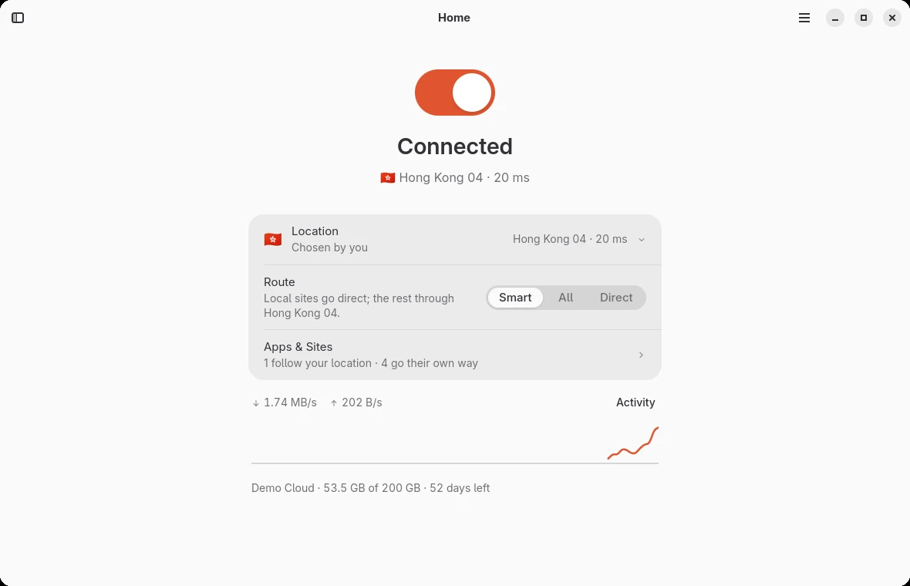
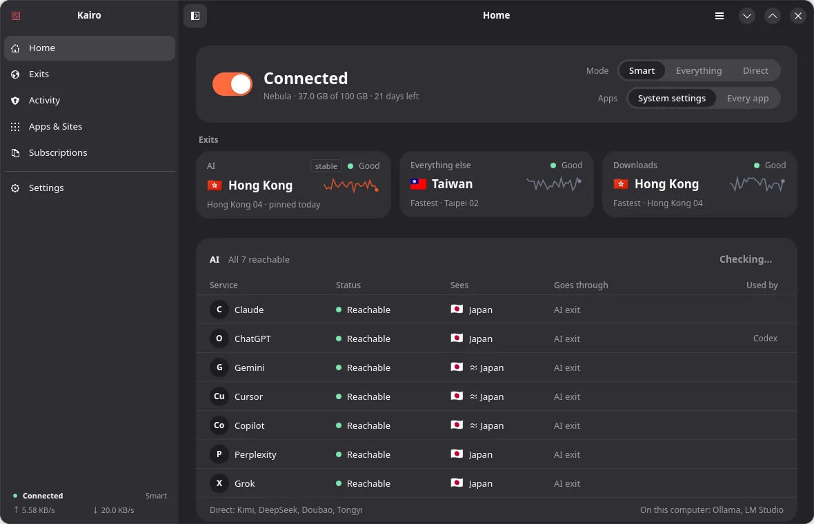
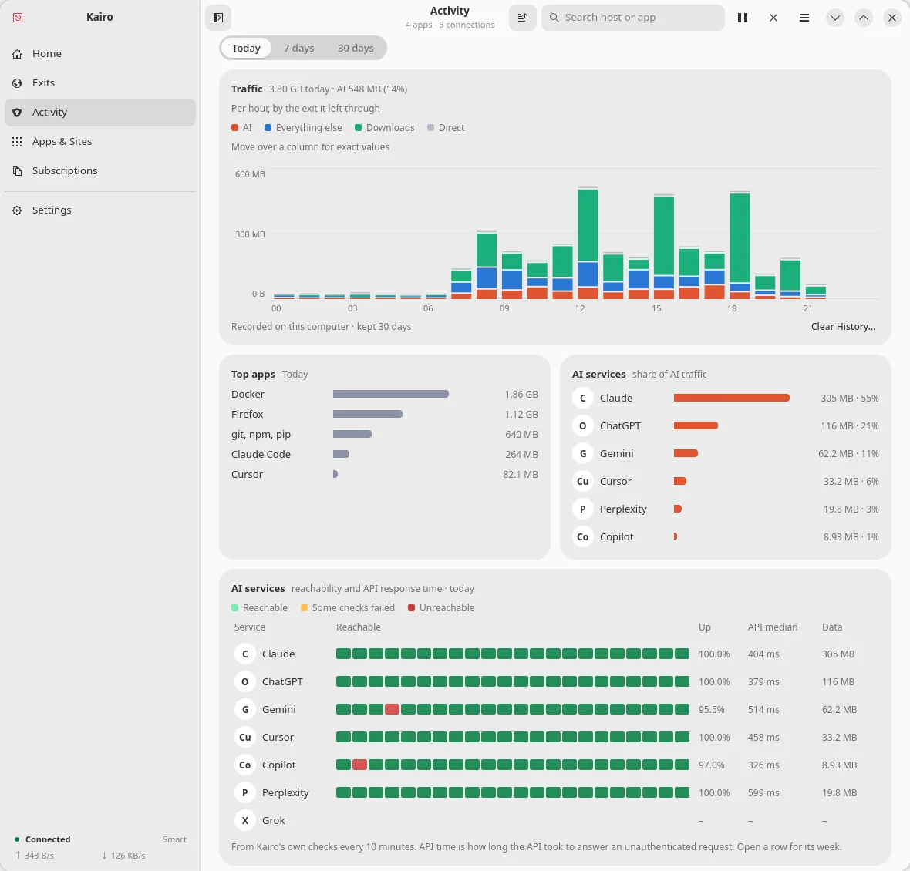
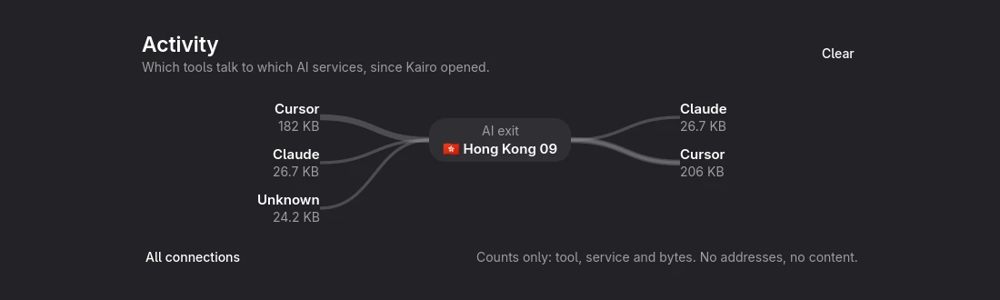
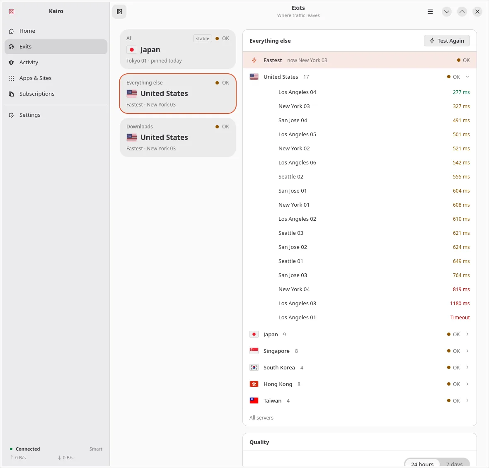
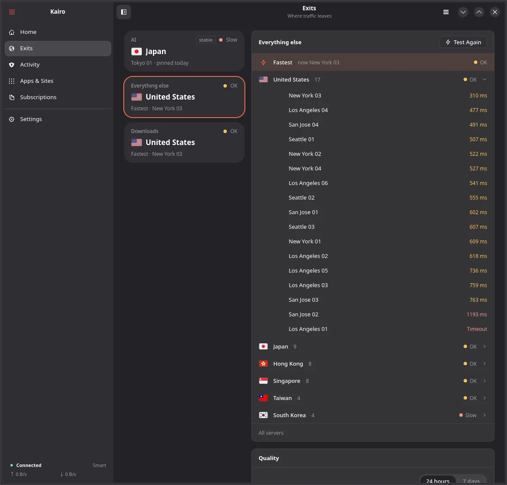
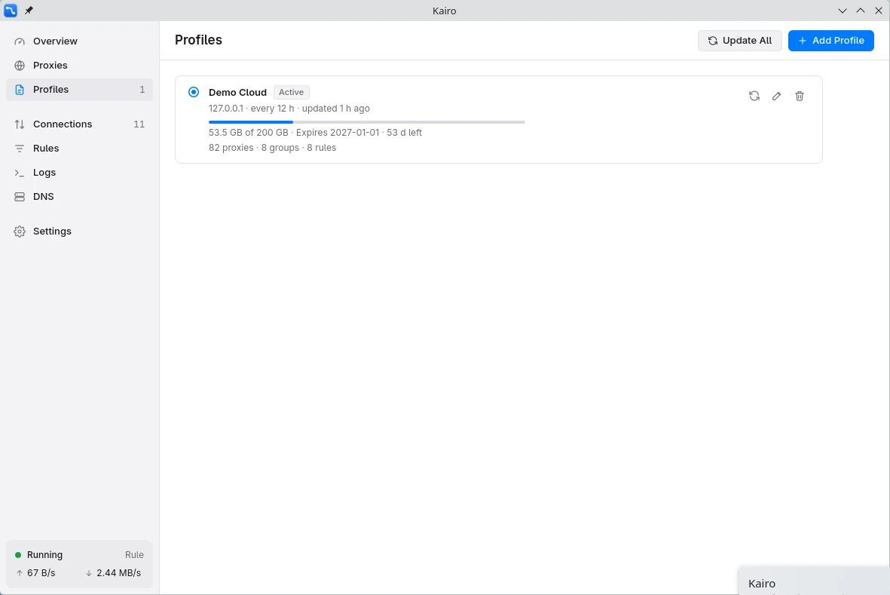
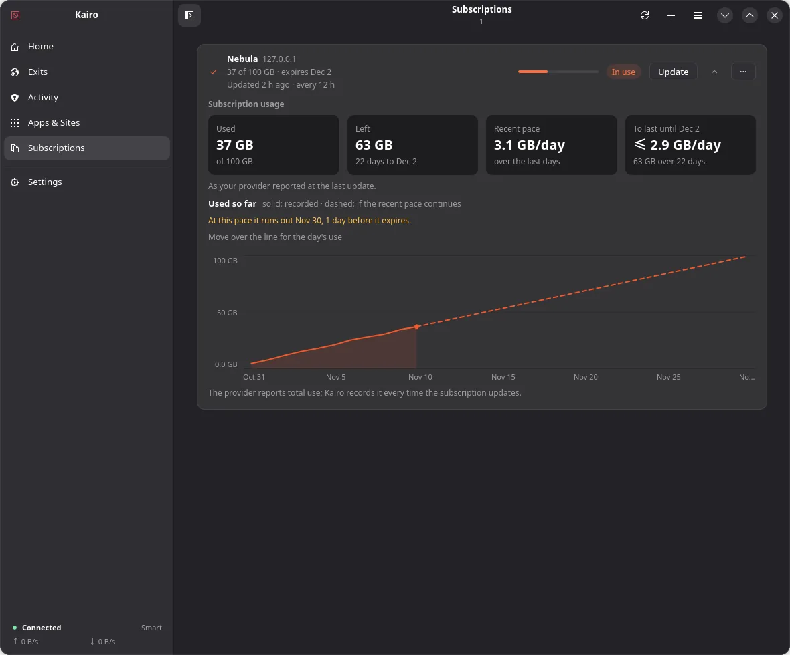
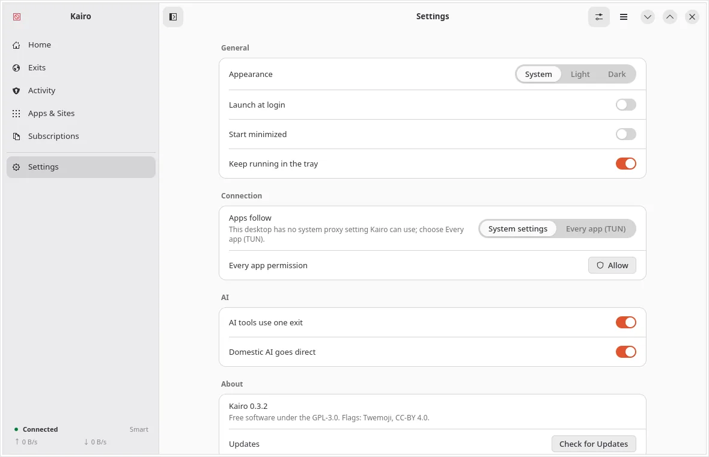
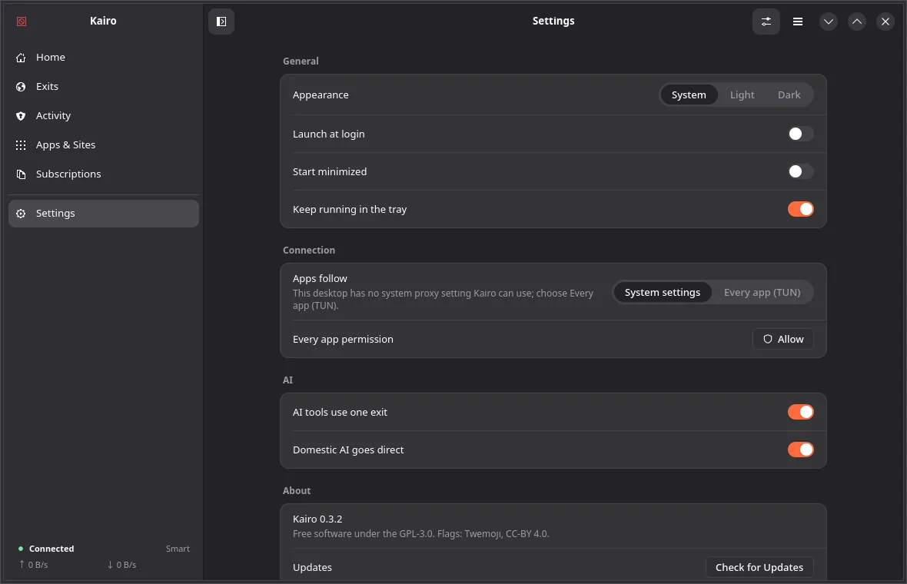

Proxy, without the tending.
Kairo picks the fastest server, moves when it slows down, keeps your AI tools on a fixed one, and puts your system settings back when it stops.










Picks the fastest serverChecked every ten minutes, and changed when yours fails or gets slow.
AI on one serverAI tools keep the same server when you change anything else.
See what each app usesKept 30 days on this computer. Nothing is sent anywhere.
Updates itselfA download icon appears when there is a new version.
Download
The latest release, for Mac, Windows, Linux and Android.
On a Mac, Kairo is not notarized yet: open it once, then click Open Anyway in System Settings → Privacy & Security. Checksums are in SHA256SUMS.